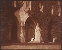

Photography emerges (1839)
From
the collection

William
Henry Fox Talbot
Cloisters of Lacock Abbey
About 1844
Cabtype
H.6-1/2 x W.8-1/16 in.
The John R. Van Derlip Fund
The
invention of photography had a great impact on painters. Not only did
it change the way that painters looked at composition, it also changed
the artists' subject choices. A realistic representation of the world
no longer had to be represented in paint, so painters could experiment
with other subjects and concepts.